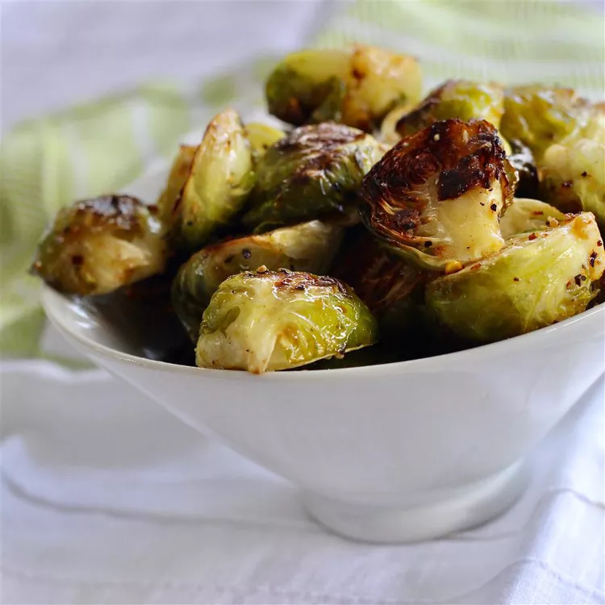

Sriracha Honey Brussels Sprouts
Honey-Sriracha Brussels sprouts are healthy and full of flavor.
They are roasted until crispy then coated with a delicious sweet and spicy sauce.
A perfect side dish for any meal!
Top with a drizzle of Sriracha sauce if desired.

Ingredients
- 1 ½ teaspoons sriracha sauce
- 1 tablespoon honey
- 1 teaspoon red pepper flakes
- 1 teaspoon fresh cracked black pepper
- 1 teaspoon kosher salt
- 1 pound Brussels sprouts, trimmed and cut in half
Recipe Steps
- Preheat the oven to 400 degrees F (200 degrees C). Spray a rimmed baking sheet with cooking spray.
- Combine Brussels sprouts, olive oil, salt, pepper, and red pepper flakes in a bowl; toss until coated. Arrange in a single layer on the prepared baking sheet.
- Roast in the preheated oven until Brussels sprouts are golden brown and tender, about 25 minutes.
- Mix honey and Sriracha sauce together in a small bowl until combined.
- Place roasted Brussels sprouts in a bowl. Drizzle with honey mixture; toss until well coated.
home